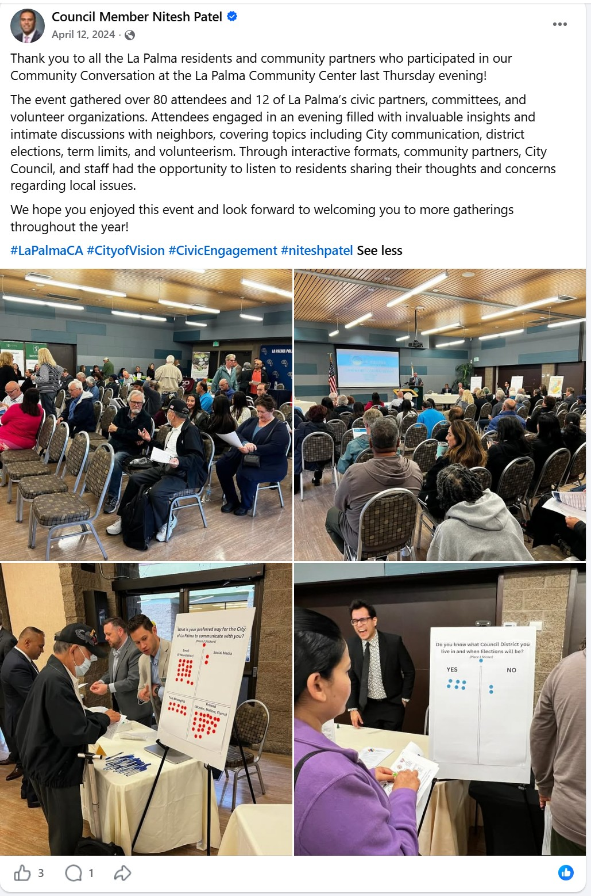
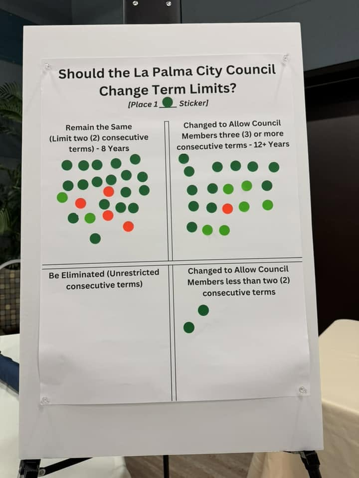
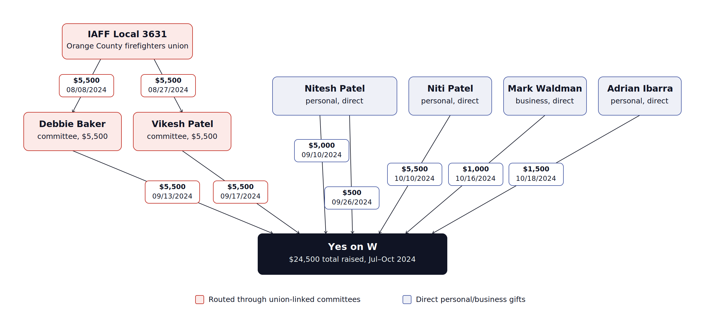

How La Palma's term limits went from a 1996 voter mandate, through a 2019 attempt residents defeated, to Measure W's 2024 passage — its funding, outreach, and enforcement dispute.
Term limits set how much consecutive power any one official can hold. Voters capped it at 8 years in 1996. In 2019, a council attempt to loosen that cap was defeated after residents packed a meeting to oppose it. Five years later, a similar measure returned as Measure W — this time drafted with taxpayer funds, financed by the officials it benefited, and passed without voters being told that sitting members' prior service wouldn't count against the new limit.
Every entry below is drawn from the public record — council minutes, campaign finance filings, consultant invoices, and correspondence. Tap any entry to expand it. Two labels appear where relevant: Documented marks a claim drawn directly from a primary record (a filing, a letter, an official's own words), and Analysis marks a passage where this record explicitly weighs a fact pattern and states what is, and is not, being alleged.
Voters approve Measure O, adopting two-term (8-year) consecutive limits for City Council members with nearly 80% approval. A mandatory four-year cooling-off period follows before a former member can run again.
At a study session, Councilmember Nitesh Patel — who says he requested the item and is “neither in support or opposed” — raises extending consecutive terms from two to three (12 years) and shortening the cooling-off period from four years to two. Councilmember Goedhart, not seeking re-election, moves to direct staff toward a March 2020 ballot measure; it carries 3-0 (Goedhart, Goodman, Steggell), with Kim and Patel abstaining. Mayor Goodman calls it “no nefarious intent.”
Residents turn out against Resolution 2019-40, the formal ballot measure. Eleven speak, nearly all opposed — including Robert Carruth, who asks it be tabled permanently, and letters from former Councilmember Steve Hwangbo and resident Steve Maikoski. Kim now says he doesn't support it; Goedhart says the timing is wrong; Goodman moves to table it indefinitely, Patel seconds, and the council kills it unanimously, 5-0. It never reaches the ballot — until a similar proposal returns as Measure W five years later, with far less pushback and a different result. See June 4, 2024, below.
Before drafting any ballot measure, the City tests public opinion at a “Community Conversation” at the La Palma Community Center — over 80 attendees, 12 civic partners. City calendar listing for the event. At the term-limits station, sticker votes split 26 to 19 in favor of keeping or lowering the existing limit — a majority against the very change the council would soon send to voters. A month later the City hires a consultant to draft that measure (below), and the council places it on the ballot June 4 without addressing this feedback. Patel later forms and leads the Yes on W committee.


Weeks before any public vote, the City signs a not-to-exceed $20,000 consulting agreement with Tripepi Smith for “Outreach Services on a potential ballot measure to adjust term limits,” with firm president Ryder Todd Smith as project manager. Weekly calls with the City Manager's office begin that month, and Smith's own invoices show him drafting ballot language and the press release announcing the council's resolution — taxpayers funding the measure's language before the council had formally acted.
The council votes 4-1 (Keo Conklin dissenting) to place Measure W on the ballot, extending term limits from 8 to 12 consecutive years — the same structure floated and killed in 2019. Keo Conklin later says “residents did not call for the term increase.” The measure is branded the “Election Reform and Voter Choice Measure,” language that runs through the consultant's paid materials.
The consultant-written, 75-word ballot question leads entirely with benefits — expanded voter choice, “more consistent community leadership,” a broader candidate pool — and never states that it raises the cap to 12 years, or that sitting members' prior terms wouldn't count toward it. The City Attorney's impartial analysis confirms members get “a fresh set of three (3) four-year terms”; Voice of OC calculated the effect: incumbents could serve up to 20 years. That reset appears in none of the taxpayer-funded materials — not the trilingual FAQ, the utility bill insert, the citywide mailer, or the news release. It surfaced only in the county voter guide's impartial analysis.
How the reset was written in — Measure W's operative text applies the new 12-year cap only to terms “commencing with” the November 5, 2024 election, so a sitting member's already-served 8 years don't count at all. A councilmember finishing an 8-year run in 2024 could be re-elected and serve three more four-year terms on top of it — up to 20 consecutive years — without ever triggering the cooling-off period 1996 required. That was the specific mechanism the ordinance used to raise the cap, not a side effect, and it is the one fact the outreach campaign never disclosed.
Eight days after the vote, the City issues a $25,000 purchase order to Tripepi Smith for “Ballot Measure Services” — $5,000 over the contract's stated cap — charged to the General Fund (account 001-120-6000) and signed by the City Manager and Assistant City Manager.
Tripepi Smith invoices $18,091.50 in public funds across five months ($4,893.75 / $7,116.50 / $3,345.00 / $1,368.75 / $1,367.50) for ballot drafting, the citywide mailer, the trilingual FAQ, the utility insert, and social-media monitoring. State law allows neutral ballot education but bars campaign advocacy (Gov. Code § 54964; Vargas v. City of Salinas (2009) 46 Cal.4th 1). Records the City produced under a public records request include drafts of the ballot's own “Argument in Favor” and “Rebuttal to Argument Against” — formal campaign documents — sitting in the consultant's city files. View the underlying records (PDF)
FPPC Forms 460 and 497, available only by public records request, show who actually funded Yes on W.
Documented — sworn campaign finance filingNitesh Patel served as the committee's Treasurer (FPPC ID #1474110), certifying its filings under penalty of perjury from his own Shirley Drive residence, with his personal Gmail as the committee's contact.
The October 24, 2024 Form 460 reports $24,500 raised through October 19, with about $22,960 spent — press accounts of the complete filings put the final total near $26,500, mostly from sitting council members and the Patel family.
Its Schedule A lists Nitesh Patel (employer: Devi Construction), Niti Patel ($5,500, same Shirley Drive address, tied to Ram Tulsi LLC), Waldman Tax & Financial Services ($1,000 — Councilmember Mark Waldman's business, matching his own Form 460), and Adrian Ibarra ($1,500 — ties detailed below). The first pre-election Form 460 (July 1–September 21) shows the period's entire $16,000 came from three sources: $5,000 from Patel personally, and $5,500 apiece routed through the campaign committees of Councilmember Debbie Baker and Patel's brother, incoming Councilmember Vikesh Patel.
Analysis — fact pattern disclosed, no wrongdoing allegedPer the committee's Form 497 filings, $5,500 from the Orange County Professional Firefighters Association, IAFF Local 3631, appears to have been routed to Yes on W through two other council members' candidate campaign committees — Debbie Baker and Vikesh Patel — rather than given to the measure committee directly; each 497 shows the same $5,500 moving from the union to the committee, then to Yes on W weeks later. The union's interest: Patel sits on the Orange County Fire Authority Board, which sets budget and labor terms affecting Local 3631's members, and has since been elected Vice Chair, chairing its Budget and Finance Committee. No evidence of any agreement, coordination, or unlawful conduct has been found; the sequence is documented so readers — and regulators — can weigh Patel's overlapping roles themselves.

Ibarra's $1,500 gift sits inside a wider web of ties to Patel. State Bar, Secretary of State, and archived-website records show both men held leadership roles at Patel's now-defunct online law school, the American International School of Law (Patel: CEO, Administrator, Registrar, de facto Dean; Ibarra: Academic Dean, faculty; both Board Members). The school was later flagged by the State Bar after an August 2023 inspection found it potentially out of compliance with state rules for unaccredited law schools; the Committee of Bar Examiners' audit report gave the school until November 15, 2023 to respond to its warning letter. Rather than responding to the cited deficiencies, Patel emailed the State Bar on September 13, 2023 — canceling a scheduled call on the matter that same day — to say he had "taken the decision to voluntarily terminate" the school's registration, effective that same November 15 date, per Patel's letter to the State Bar included in its agenda item on the termination.
Records also show the two co-own a building at 17762 Cowan in Irvine — the same address on Patel's own Devi Construction contribution, above — where Ibarra's firm, Shatford Law, is based; and share ISP Holdings LLC (Patel as Manager/Registered Agent, Ibarra as Manager) and Eoto Inc. (Patel as President/CEO, Ibarra as Vice President). A third figure, Andy Szeto, recurs alongside both across several of these entities. Councilmember Mark Waldman has a financial tie to this same network: his tax-preparation firm, Waldman Tax & Financial Services, Inc. — of which he is President — has reported Shatford Law as a source of $10,001–$100,000 in gross income to the business in each of the past two years, per his 2024 and 2025 Form 700 filings.
Analysis — fact pattern disclosed, no wrongdoing allegedNone of this suggests the contribution was anything other than what the filing states; it is presented so readers can see the full relationship behind it.
In total, money from at least three of the five sitting council members — Patel, Baker, and Waldman — funded a measure that extended their own tenure.
Schedule E shows where it went: mostly paid slate-mail operations built to resemble independent voter guides — “Budget Watchdogs,” “California Voters Guide,” “Senior Advocate,” “Election Digest,” and “Voter Newsletter,” five names sharing a single Torrance address — plus $13,288 to DTN Tech and payments to 3AM Communications and Walking Man, all for “Mailers and Walk Pieces.” Voters had no way to know these “guides” were bought by a committee run out of a councilmember's house.
Mailers under the “Yes on W — Reform Government Now!” brand carried police and firefighter imagery — including the Local 3631 insignia — and promised Measure W would “maintain term limits for La Palma's elected officials,” without disclosing the 8-to-12-year extension or the incumbent reset. View the mailers. Councilmember Keo Conklin: “It's deceptive and not transparent.”
Patel, then terming out, declined to answer reporters' questions about the measure or about two brothers serving together on the council. Baker and Waldman did not respond to press inquiries at all.
Unlike neighboring cities, La Palma posts no campaign finance data online — seeing who funded the campaign required a public records request.
A separate dispute plays out alongside the campaign: enforcement of the City's 2021 temporary-sign ordinance (signed by then-Mayor Patel), which requires a City permit for signs on non-residential property.
On or about September 16, 2024, City Manager Conal McNamara personally removes a “No on W” sign from the public right-of-way; a police officer later returns it. The City Attorney's October 15 letter later confirms this, offering only that the City Clerk — who “would typically be involved” — “was not available that day.”
October 1, 2024 — Attorney Adam Sechooler, retained by Robert Carruth's group opposing Measure W, sends the City a First Amendment demand letter. It documents the McNamara removal, cites unpermitted “Yes on W” signs at the Walmart, Coffee Bean & Tea Leaf, and La Capilla despite repeated complaints the City brushed off with “a vague reference to supposed ‘custom,’” and warns that selective enforcement could expose “individual staff or members of the La Palma City Council” to liability under 42 U.S.C. § 1983.
Documented — City Attorney’s own written responseOctober 15, 2024 — City Attorney Ajit Thind responds (Colantuono, Highsmith & Whatley file no. 42034.0011), denying any violation but conceding, on the record: staff had not enforced the permit rule “for several years”; the City Manager did remove the sign, with the Clerk's unavailability the only explanation offered; and staff was “already... working on” an exemption to “codify staff's historical interpretation,” with first reading expected in November. The letter also calls Carruth a resident with “a history of making complaints that have been unsubstantiated,” and encloses photos of unpermitted “No on W” signs the City had likewise not removed.
October 22, 2024 — Sechooler replies that years of claimed non-enforcement can't be squared with a City Manager personally pulling one side's sign mid-campaign; asserts, on information and belief, that “Yes on W” signs went up on commercial property without owners' consent and that owners at one location removed them themselves; rejects the personal attack on Carruth; and reserves the option of litigation.
The Event-News Enterprise sought comment from the Mayor, City Manager, and City Attorney Thind, and received none by press time.
Measure W passes with roughly 58% of the vote. The council members who funded the campaign are its direct beneficiaries.
Five weeks after the election, the council adopts Ordinance 2024-04 — folded into a larger, state-mandated housing and zoning package — exempting temporary signs of six square feet or less (up to three per property) from the permit rule the “Yes on W” signs had been accused of violating. The City Attorney's October 15 letter had already announced this fix was underway. First reading came November 5 — election day itself — with adoption December 10. In fairness: the change took effect only after the election, and was part of a broader ordinance mainly driven by state housing-law compliance. But the rule the incumbents' own committee was accused of breaking no longer exists — and the City's own attorney announced the plan to erase it in the same letter defending the City's conduct.
The same union gives $5,900 directly to Patel's 2026 re-election committee (FPPC ID #1490903), received May 29 — its only itemized contribution for the first half of 2026, and, unlike 2024, given straight to Patel rather than routed through a colleague. No evidence of any agreement or unlawful conduct is alleged; it is presented so voters can weigh Patel's continuing financial relationship with a union whose members' pay he helps oversee as OCFA Board Vice Chair. View the filing (PDF).
Every document below is cited above, at the point in the timeline it supports.